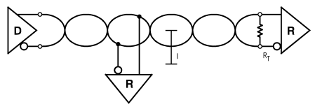
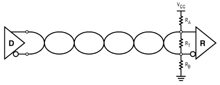
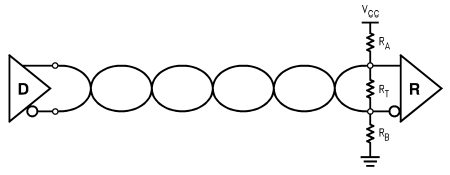

现代电路的两个特点：信号的rise/fall time越来越快；wire连接越来越长。此时如果driver, transmission line和receiver的impedance不match，有discontinuity，就会产生reflection，导致各种undershoot和overshoot。
- 水流动时如果受到均匀的阻力，就能比较平稳地到达对岸。但如果不均匀，就会产生反射的水波。
-
- 考虑上图的情况，信号从driver出发，先流过一段长通道，每一小段unit length的阻力都是50Ω，于是信号平稳流过。
- 然而到达RX端时，突然遇到1MΩ的"brick wall"，产生反射信号。这一反射信号再次从Z0流回TX端。
- 图中TX端看进去的impedance是50Ω，因此反射信号不会再次产生reflection。但如果TX端的impedance与transmission line不match，则会再次产生反射信号。这些信号将在TX和RX之间震荡，直到最终damp out。
以上可以解释为何trace impedance只和width有关，而和length无关。因为信号是逐步流过每一段unit length。Length会影响的是delay：如果delay短的话，the ringing will damp out faster，信号能更快settle。
Reflection coefficient的计算是根据driver impedance (RD)和transmission line impedance Z0：
ρ = (RD-Z0) / (RD+Z0)
这个coefficient会在-1到1之间。理解以下3种情况：
- ρ=-1：说明RD = 0，表示short circuit
- ρ=1：说明RD = ∞，表示open circuit
- ρ=0：No reflection – ideal situation。
Termination的作用就是match impedance，防止reflection。在TX and/or RX端加termination resistor，来保证他们的impedance是50Ω。以下是两种最基础的设计。平时最常用的是RX的parallel termination。如果只有TX termination，有两大问题：依然会有一次reflection，以及只适用于point-to-point。详见Differential Example中的解释。
(
Reference)
|
Unterminated
|

|
- 这种情况通常twisted pair是50Ω，是否有reflection完全取决于TX和RX的impedance。信号先从50Ω传到RX，如果RX的impedance高的话，就会将signal reflect back。而这个reflected signal到达TX会看到TX的impedance，如果mismatch则会再次reflect。（
- 如果data rate低，能保证这些reflection有足够的时间settle到steady state（在下一个transition前）。如果cable短，则能保证back and forth reflection settle down的时间很短。这两个条件满足的话，可以使用unterminated。
|
|
Series Termination
|

|
- RX端没有termination，依然会产生reflection，但当reflected信号传回TX端，却会见到matched impedance而被terminate
- 也就是说，依然会有一次reflection，时间为one round trip cable delay
- 这个termination的几个问题：
- 由于有process variation，TX的output impedance可能会vary，然后designer不得不根据这个impedance来设计transmission line。假如一块板子上TX元件坏了，换了另一个，而impedance变了，就不得不对这个板的trace进行rework
- 只适用于Point-to-point。如果同一个TX drive多个RX的话，到每一个RX的路径不同，noise margin会变
|
|
Parallel Termination
|
 |
- 基本是最常用的。可以支持multidrop applications，但是要注意stub length。另外driver的output swing会减少，导致noise margin压缩。
|
|
AC termination, Power termination
|
 

|
- 这两种parallel termination的variation各自解决了parallel本身的一些问题。此处略过，详见Reference。
|
|
Bidirectional termination
|
 |
- 由于两边都有TX和RX，所以两边都要用parallel termination
- 优缺点详见Reference。
|
进阶：split termination (
Reference 1,
Reference 2)

左边的termination理论上能用，但实际上大家都会用右边。这是因为现实中的信号有nonideality。理论上，differential signal应该完美相反。但考虑common mode的存在，即短时间内两根线上的voltage相等而不是相反。当common mode信号到达termination resistor的两端时，由于resistor上不会产生电流，相当于碰到了open circuit，于是所有common mode noise全部被reflect，而且会在TX和RX之间不停震荡叠加。这时，右边电路中加上的电容相当于enforced a practical AC GND at the center-tap。当CM 信号到达，能产生电流，相当于CM信号也能见到某种意义上的matching impedance（impedance大小由cap决定）。
产生CM noise的原因很多，其中之一就是differential的两根线delay并不完全相同，正信号和负信号之间有一个小的delta。如果是这个原因，那么在选择cap的size的时候，只要能够在这个delta时间内hold the charge steady，那么大小就足够了。或者可以从频域的角度来看，将这个termination看作一个low-pass filter，计算他的corner frequency，公式为fc = 1/(2πR⁄2C)。只要选择corner frequency低到能过滤掉大部分CM noise即可。（比如R = 50Ω, C = 0.1uF的话，corner freq = 64kHz，就是一个不错的数字）